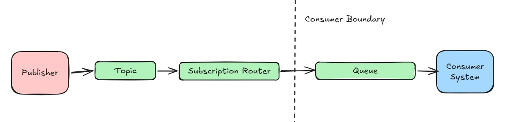
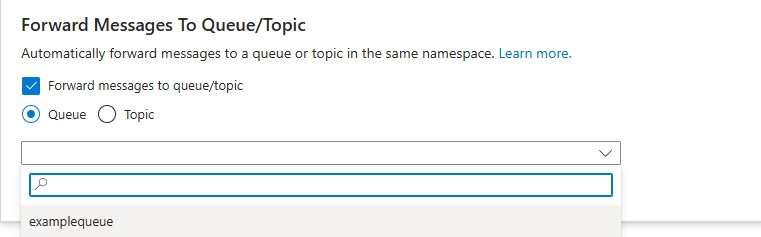
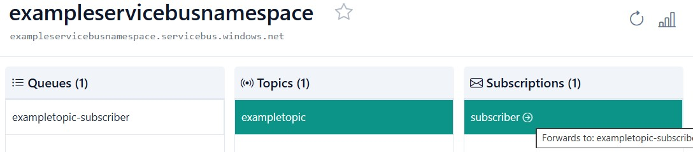

Auto-Forwarding: Azure Service Bus's Most Under-Appreciated Feature
Why giving your downstream teams true ownership of their queues is the secret to scalable, drama-free message routing.
For months, my morning routine started the same way: I'd check Slack and find a few requests from other teams asking me to manually resubmit their dead-lettered messages. I was managing a central Service Bus namespace - nothing massive, just 3 topics with about 7 subscriptions each - but I had become a bit of a messy bottleneck.
The Shared Infrastructure Friction
When you have multiple teams reading directly from your Subscriptions, you hit two walls immediately: Alarms and Permissions.
Because the lowest-level entity for many Azure Monitor metrics is the Topic itself, all the 'Subscription DLQ' alerts were routing to me. It wasn't a life-or-death crisis, but it was annoying to be the designated 'janitor' for bugs in codebases I didn't even own. Meanwhile, the consumer teams were frustrated because I couldn't give them Data Owner permissions on the production Topics - which is required if you want a team to be able to resubmit their own messages.
The "AWS Gold Standard" (in Azure)
In the AWS world, the SNS-to-SQS pattern is the gold standard. You never read from an SNS topic directly; you point it at an SQS queue. In Azure, we have the exact same capability, but it's hidden under a property called ForwardTo. When you enable this, the Subscription stops being a mailbox and starts being a router. It catches the message and immediately flings it into a dedicated Queue owned by the consumer team.

The Strategic Win: Domain Sovereignty
By switching to Subscription-to-Queue auto-forwarding, the architecture changes from 'Shared Infrastructure' to 'Scoped Ownership.'

- Scoped Permissions (The Security Win): You can give the consumer team
Service Bus Data Owneraccess to only their specific Queue. They can retry messages, purge their DLQ, and inspect payloads without you ever needing to grant them permissions on the central Topic. - Alarm Sovereignty: Their DLQ depth alarms are now scoped to their specific Queue. The alerts bypass the publisher entirely and go straight to the team that actually owns the consumer.
- Safe, Isolated Replays: If a consumer team fixes a bug, they can resubmit dead-lettered messages directly back onto their Queue. The message is processed successfully without being broadcast to any other subscriber on the Topic.
Writing the Infrastructure as Code
Implementing this pattern is a one-line change in your templates. It's essentially the 'SNS-to-SQS' pattern for Azure developers.
Bicep Implementation
// The Topic Subscription (The Router)
resource subscription 'Microsoft.ServiceBus/namespaces/topics/subscriptions@2022-10-01-preview' = {
name: 'sub-consumer-a'
parent: topic
properties: {
// This is the magic line that enables ownership:
forwardTo: targetQueue.name
}
}The One Error You Need to Know
One tricky aspect of auto-forwarding is debugging routing failures. If the destination queue is full, disabled, or deleted, messages land in the Subscription's Dead Letter Queue with a DeadLetterReason of TransferEndpointUpdateFailed.
If you see this error, it means your 'pipe' is broken before the message even reached the consumer's 'bucket'.

Tracking down these
TransferEndpointUpdateFailed errors in the Azure Portal is a nightmare of blade-clicking. I built Bussin specifically to make this topology obvious. It visually flags auto-forwarders in the list and surfaces both the subscription-level and queue-level DLQs on a single screen so you never lose track of a message between teams.